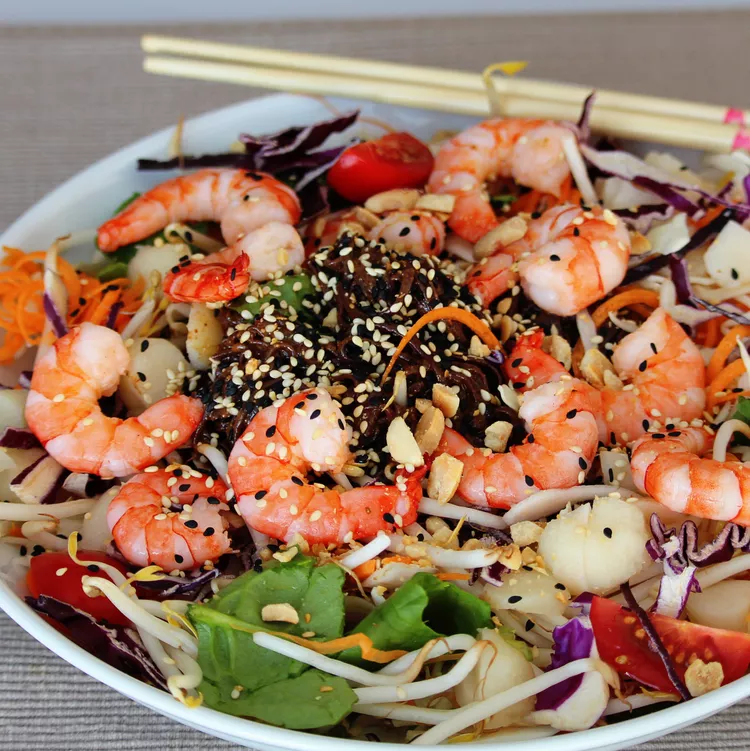

Inspired by Panera's popular Shrimp and Soba Salad, and reminiscent of a dish you might order at a Japanese restaurant, this 25-minute recipe is a complete meal in a bowl. In addition to the quick-cooking shrimp and hearty soba noodles, it features a colorful array of vegetables and a ginger-infused orange miso dressing. Try tossing half of the dressing with the noodles and the other half with the vegetables to ensure even distribution, Allrecipes Allstar Buckwheat Queen suggests.